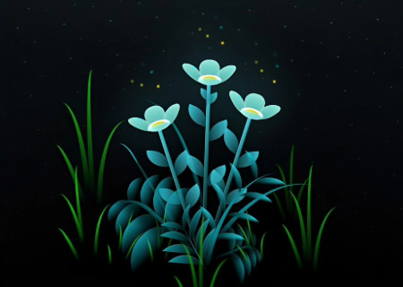
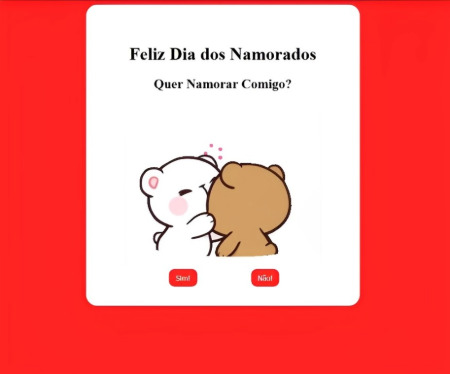

MEUS CONHECIMENTOS.
Desenho
Sempre fui apaixonado por desenhos, então decidi fazer cursos para me
profissionalizar, nos anos de 2019 e 2021, fiz dois cursos, sendo eles de Caricatura e de
Manga.
Programação
No ano de 2022 descobri a programação e me apaixonei de cara, descobri que era nessa
área que gostaria de trabalhar.
Atualmente prefiro a parte de Front-End, mas pretendo aprender outras áreas.
Word
Sempre precisei escrever no Microsoft Word, então decidi fazer um curso sobre ele para ter um maior conhecimento.
MUITO PRAZER, SOU ACHILES B. POLCELLI
Atualmente moro em Osasco/SP. Descobri a tecnologia quando eu era pequeno, e desde lá sempre fui apaixonado por ela, sempre pesquisava como resolver os problemas que davam no computador da minha mãe e no meu video game. Foi assim que me interessei em trabalhar com algo de tecnologia. Em 2022 tive meu primeiro contato com a programação, e desde aquele dia, decidi que era aquela área que queria me profissionalizar.
Os desafios que a programação me entregou, foi o que me conquistou, e por isso nasceu a vontade insaciável de ter conhecimento sobre a área. Meu primeiro projeto com a programação foi o meu TCC que fiz para concluir o curso de Tecnologia da Informação no Colégio Aplicação de Osasco. Atualmente estou cursando o curso de Análise e Desenvolvimento de Sistemas na Faculdade Cruzeiro do Sul.
MEU PORTFÓLIO.
Flowers

Valentines Day
